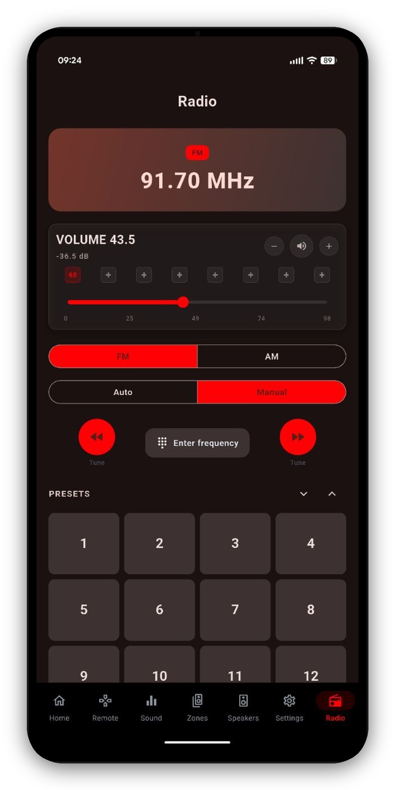

On Denon and Marantz receivers with a built-in tuner, AVR Maestro gives you a proper FM/AM radio UI. The station card shows the live band, frequency and active preset, and follows the receiver in real time.

One-time purchase, no ads, no subscriptions. Connect in under a minute.